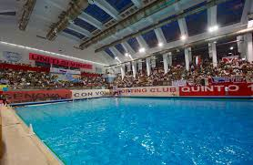
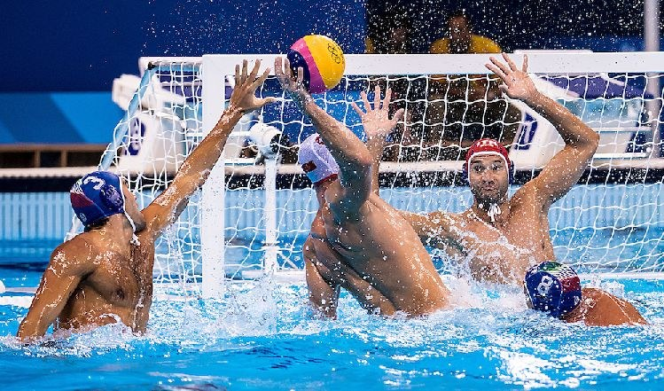
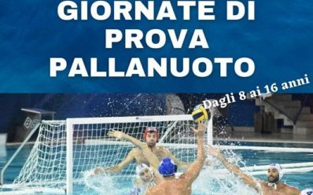

Notizie Recenti

Vittoria Storica a Genova
Il Sanremo Water Polo ha sconfitto i Genova Sharks con un netto 12-7. Una prestazione magistrale che segna un nuovo capitolo per la squadra.

Nuove Maglie 2025
Presentata la nuova divisa ufficiale per la stagione 2025: più leggera, performante e con uno stile completamente rinnovato.

Under 18 in semifinale
La squadra giovanile conquista le semifinali regionali: un traguardo storico e una promessa per il futuro della società.

Open Day in Piscina
Sabato 15 Giugno tutti in vasca per scoprire il mondo della pallanuoto! Aperto a bambini e ragazzi di tutte le età.